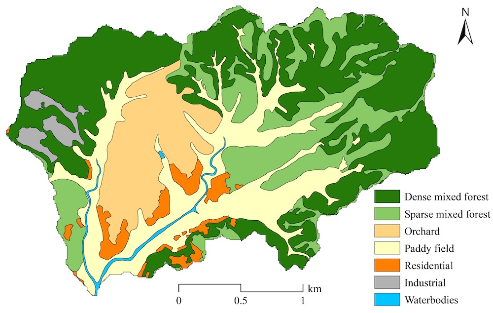
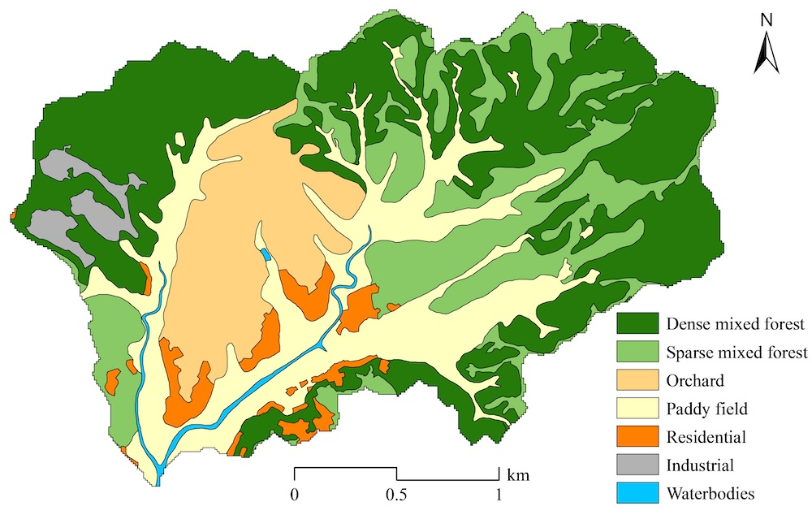
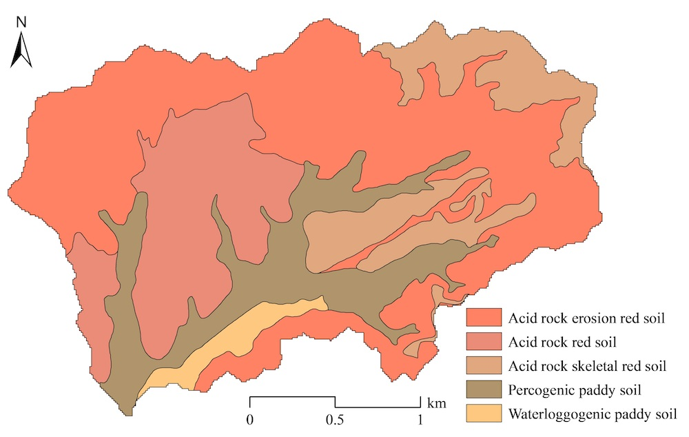
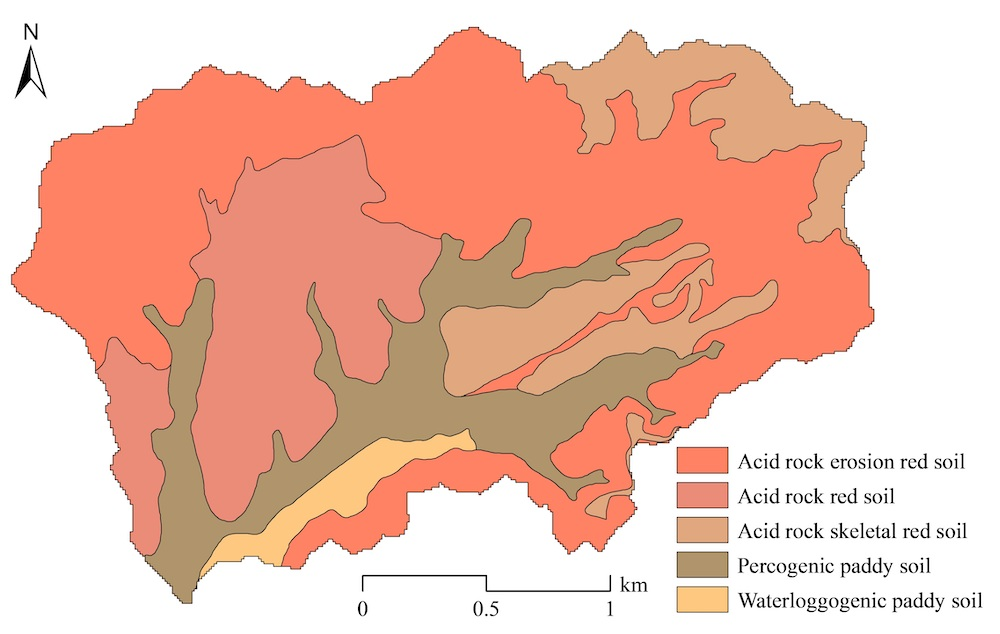

In simple terms, watershed modeling is to simulate the behavior of watershed such as runoff, soil erosion, and nutrient transfer using the empirical or physical formulas based on the geographic information data (e.g., digital elevation model [DEM], landuse map, and soil map), meteorological data, and management data, etc. Thus, data collection and preparation are the first key step for watershed modeling. As a demo, data from the Youwuzhen watershed, Changting County, Fujian province, China, is selected for long-term (i.e., daily time-step) watershed modeling and application.
Basically, the input data of SEIMS-based watershed model includes two categories such as spatial data and plain text.
Spatial data includes raster data and vector data. Theoretically, all formats of raster (https://www.gdal.org/formats_list.html) and vector (https://www.gdal.org/ogr_formats.html) data supported by GDAL are acceptable for SEIMS. Even though, the most commonly used GeoTIFF and ESRI Shapefile are highly recommended for raster and vector data, respectively.
Except for the spatial data, almost all the other data can be provided as plain text. The basic conventions of plain text are designed as:
#) will be regarded as a comment line and ignored by SEIMS. However, there is one exception when the first line of one plain text file is for recording the time-system and timezone, e.g., #LOCALTIME 8 means date time recorded in the current file is east 8th district time and #UTCTIME means Coordinated Universal Time which is also known as Greenwich Mean Time (GMT).,) is the delimiter for values within each data line.-) is the primary delimiter within each value while colon (:) is the secondary delimiter.For example, the following plain text
can be parsed as a Python data structure of dictionary like:
The demo data named Youwuzhen watershed (~5.39 km2) is located in Changting County of Fujian province, China (Fig. Youwuzhen Map). It belongs to the typical red-soil hilly region in southeastern China and suffers from severe soil erosion. The study area has hills with steep slopes (up to 52.9° and with an average slope of 16.8°) and broad alluvial valleys. The elevation ranges from 295.0 m to 556.5 m. The landuse types are mainly forest (59.8%), paddy field (20.6%), and orchard (12.8%) (Fig. Youwuzhen Landuse). Soil types in the study area are red soil (78.4%) and paddy soil (21.6%) which can be classified as Ultisols and Inceptisols in US Soil Taxonomy, respectively (Fig. Youwuzhen Soil Type).
To improve the computational efficiency for demonstration in this manual, the DEM (ywzdem30m.tif), landuse (ywzlanduse30m.tif), and soil (ywzsoil30m.tif) map are all unified to be of 30 m resolution.
Fig. Location of the demo watershed named Youwuzhen watershed
Fig. Landuse map of the Youwuzhen watershed
Fig. Soil map of the Youwuzhen watershed
The outlet location (i.e., as vector point) of the Youwuzhen watershed is prepared as ESRI Shapefile. If the outlet data cannot be predetermined, the location (i.e., center of the gridded cell) with largest flow accumulation will be marked as the outlet of the current study area.
In the current version of SEIMS, the Thiessen polygon of meteorological stations and precipitation stations that covers the entire watershed should also be provided as vector polygon data, e.g., thiessen_meteo.shp and thiessen_pcp.shp, respectively. The attributes of each polygon should include the unique ID (ID) which is coincident with station ID introduced in the following section, station name (Name), X and Y coordinates under the projected coordinate system (LocalX and LocalY), latitude and longitude under the WGS84 coordinate system (Lat and Lon), and altitude (Elevation).
TODO: The requirements of the Thiessen polygon of meteorological stations and precipitation stations should be removed since the spatial information of these stations presented as plain text (see here) can provide similar information.
All these spatial data are in SEIMS\data\youwuzhen\data_prepare\spatial.
The annual average precipitation of the Youwuzhen watershed is 1697.0 mm and intense short-duration thunderstorm events contribute about three-quarters of annual precipitation from March to August.
The fields of spatial information of precipitation station are shown in Tab. Precipitation Station.
Tab. Fields of precipitation station
| Field name | Datatype | Description |
|---|---|---|
| StationID | Integer | Unique station ID |
| Name | String | Station name |
| LocalX | Float | X coordinates (unit: m) under the projected coordinate system |
| LocalY | Float | Y coordinates (unit: m) |
| Lat | Float | Latitude (unit: degree) under the WGS84 coordinate system |
| Lon | Float | Longitude (unit: degree) |
| Elevation | Float | Altitude (unit: m) |
For example, SEIMS\data\youwuzhen\data_prepare\climate\Sites_P.csv:
The first line is to state the time-system and time zone (see here). If not provided, #UTCTIME will be regarded as the default. The fields and formats of precipitation data are as follows.
Tab. Fields and formats of precipitation data item
| Field name | Datatype | Description |
|---|---|---|
| DATETIME | Datetime string | Date time with the format of YYYY-MM-DD HH:MM:SS |
| StationIDs | Float | Precipitation value for each Station IDs. Multiple stations can be StationID1,StationID2, … StationIDN |
Thus, the records of precipitation data are something like (SEIMS\data\youwuzhen\data_prepare\climate\pcp_daily.csv):
The Youwuzhen watershed is characterized by a mid-subtropical monsoon moist climate and has an annual average temperature of 18.3 °C. The format of meteorological station is the same as that of precipitation station (see here), e.g., SEIMS\data\youwuzhen\data_prepare\climate\Sites_M.csv.
Same to precipitation data, the first line of meteorological data text is to state the time-system and timezone (see here). If not provided, #UTCTIME will be regarded as default. The fields and formats of meteorological data are as follows. Note that there is no fixed order of these fields.
Tab. Fields and formats of meteorological data item
| Field name | Datatype | Description |
|---|---|---|
| StationID | Integer | Station ID |
| DATETIME | Datetime string | Date time with the format of YYYY-MM-DD HH:MM:SS |
| TMAX | Float | Maximum temperature (unit: degC) |
| TMIN | Float | Minimum temperature (unit: degC) |
| TMEAN | Float | (Optional) Mean temperature (unit: degC) |
| RM | Float | Relative moisture (unit: %) |
| WS | Float | Wind speed (unit: m/s) |
| SR or SSD | Float | Solar radiation (units: MJ/m2/day) or sunshine duration hour (unit: hr) |
| PET | Float | Potential evapotranspiration (mm) |
Thus, the records of meteorological data are something like (SEIMS\data\youwuzhen\data_prepare\climate\meteo_daily.csv):
Besides, the units of each type of data should also be provided, e.g., SEIMS\data\youwuzhen\data_prepare\climate\Variables.csv.
TODO: In the current version of SEIMS, the units should be the same as Table 3. However, some unit convert functions should be added in the future to make SEIMS more compatible with commonly used units.
The periodic site-monitoring streamflow, sediment, or nutrient data collected within the watershed are regarded as observed data. The observed data is organized as one site information file and several data files corresponding to the number of monitoring sites and monitoring variables.
The fields of spatial information of monitoring sites are as follows.
Tab. Fields of monitoring site data
| Field name | Datatype | Description |
|---|---|---|
| StationID | Integer | Unique station ID |
| Name | String | Station name |
| Type | String | Monitoring variables, use En dash as separator for multiple variables. Avoid En dash in each single Type. |
| Unit | String | Units of monitoring variables, use En dash as separator for multiple units. Avoid En dash in each single Unit. |
| LocalX | Float | X coordinates (unit: m) under the projected coordinate system |
| LocalY | Float | Y coordinates (unit: m) |
| Lat | Float | Latitude (unit: degree) under the WGS84 coordinate system |
| Lon | Float | Longitude (unit: degree) |
| Elevation | Float | Altitude (unit: m) |
| isOutlet | Integer | Types of monitoring site: 1: The outlet of watershed 2: The outlet of one subbasin 3: The junction of multiple subbasins 0: Other spatial location |
For example, SEIMS\data\youwuzhen\data_prepare\observed\SiteInfo.csv:
Note that the observed data is primarily used for postprocessing such as matching to the corresponding simulated values. Thus, the Type should be accord with the output of SEIMS-based watershed model. All the currently available outputs can be found in SEIMS\seims\preprocess\database\AvailableOutputs.csv. For example, if the total nitrogen data is monitored, the type should be CH_TN according to the value of the FILENAME field (obviously, not include the suffix, e.g., .txt) in the output item of total nitrogen amount in reach:
Like the format of precipitation data, the first line is optionally to state the time-system and timezone (see here). If not provided, #UTCTIME will be regarded as the default. The fields and formats of observed data are as follows.
Tab. Fields and formats of observed data item
| Field name | Datatype | Description |
|---|---|---|
| StationID | Integer | Station ID |
| DATETIME | Datetime string | Date time with the format of YYYY-MM-DD HH:MM:SS |
| Type | String | Monitoring variable |
| VALUE | Float | Monitoring value of current variable at the current date time |
Thus, the records of observed data are something like (SEIMS\data\youwuzhen\data_prepare\observed\observed_Q.csv):
Lookup tables, including crop, fertilizer, tillage, lanuse, soil, and urban, are adopted from SWAT and predefined in SEIMS\seims\preprocess\database. Parameters specific to study areas can be appended to these lookup tables or prepared in separate files in SEIMS\data\youwuzhen\data_prepare\lookup. The details of the most common used lookup tables are as follows.
Soil properties include physical properties and chemical properties. The fields and descriptions are shown in Tab. Soil Lookup. The optional parameters can be omitted. Note that the SEQN and NAME may not be consistent with soil types (SOILCODE), so that to represent heterogeneity of the same soil type according to different landcover or topographic positions. However, the SEQN MUST be consistent with the values in soil map, i.e., ywzsoil30m.tif. The soil properties of multiple layers are concatenated with En dash (-) as described in here.
Tab. Fields and description in lookup table of soil properties
| Field name | Datatype | Unit | Description |
|---|---|---|---|
| SEQN or SOILCODE | Integer | - | Unique identifier of soil map |
| NAME | String | - | Soil name |
| SOILLAYERS | Integer | - | Number of soil layers |
| SOL_Z | Float array | mm | Depth from soil surface to bottom of layer |
| SOL_OM | Float array | % | Organic matter content |
| SOL_CLAY | Float array | % | Clay content, diameter D < 0.002 mm |
| SOL_SILT | Float array | % | Silt content, 0.002 mm < D < 0.05 mm |
| SOL_SAND | Float array | % | Sand content, 0.05 mm < D < 2 mm |
| SOL_ROCK | Float array | % | Rock fragment content, D > 2 mm |
| SOL_BD | Float array | Mg/m3 | Moist bulk density, value ranges 1.1 ~ 1.9 |
| SOL_AWC | Float array | mm | Available water capacity |
| SOL_ZMX | Float | mm | (Optional) Maximum rooting depth of soil profile |
| ANION_EXCL | Float | - | (optional) Fraction of porosity (void space) from which anions are excluded, default is 0.5 |
| SOL_CRK | Float | - | (optional) Potential or maximum crack volume of the soil profile expressed as a fraction of the total soil volume. |
| SOL_K | Float array | mm/hr | (optional) Saturated hydraulic conductivity |
| SOL_WP | Float array | mm | (optional) Wilting point |
| SOL_FC | Float array | mm | (optional) Field capacity |
| SOL_POROSITY | Float array | - | (optional) Porosity |
| SOL_USLE_K | Float array | - | (optional) USLE K factor |
| SOL_ALB | Float | - | (optional) Albedo when soil is moist |
| ESCO | Float | - | (optional) Soil evaporation compensation factor, the default is 0.95 |
| SOL_NO3 | Float array | g/kg | (optional) concentration of nitrate |
| SOL_NH4 | Float array | g/kg | (optional) concentration of ammonium-N in soil |
| SOL_ORGN | Float array | g/kg | (optional) concentration of organic nitrogen |
| SOL_ORGP | Float array | g/kg | (optional) concentration of organic phosphorus |
| SOL_SOLP | Float array | g/kg | (optional) concentration of soluble phosphorus |
Thus, the lookup table of soil properties of specific study area is something like (SEIMS\data\youwuzhen\data_prepare\lookup\soil_properties_lookup.csv):
Some parameters of landcover at the beginning of simulation should be defined. The fields and descriptions are shown in Tab. LUCC Lookup. Please refers to the predefined database seims/preprocess/database/CropLookup.csv and LanduseLookup.csv.
Tab. Fields and descriptions in the lookup table of initial landcover parameters
| Field name | Datatype | Unit | Description |
|---|---|---|---|
| LANDUSE_ID | Integer | - | Landuse ID (MUST cover IDs in the landuse map) |
| IGRO | Integer | - | Land cover status: 0-none growing; 1-growing |
| LANDCOVER or ICNUM | Integer | - | ICNUM, Land cover ID number (required when IGRO is 1) |
| LAI_INIT | Float | - | Initial leaf area index (required when IGRO is 1) |
| BIO_INIT | Float | kg/ha | Initial biomass (required when IGRO is 1) |
| PHU_PLT | Float | degC | Number of heat units to bring plant to maturity (required when IGRO is 1) |
| EPCO | Float | - | Plant uptake compensation factor, 0.01 ~ 1 |
| RSDIN | Float | kg/ha | Initial residue cover |
| CURYR_INIT | Float | year | Initial age of trees |
| CHT | Float | m | Initial canopy height |
| DORMI | Float | - | Dormancy status code: 1 - growing and 0 - dormancy |
| USLE_P | Float | - | Conservation practice management factor of USLE |
Thus, the lookup table of initial landcover parameters of specific study area is something like (SEIMS\data\youwuzhen\data_prepare\lookup\landcover_initial_parameters.csv):
There are three different types of Best Management Practices (BMPs) supported or will be supported by SEIMS.
In this section, the organization of BMP scenario is firstly presented, then followed by the detail parameter settings of different BMPs. In the current version of this user manual, plant management and general areal structural BMP are introduced as an example. More BMPs should be updated in the future version.
A BMP scenario is a collection of different BMPs which will be applied to an SEIMS-based watershed model to affect watershed behaviors. There can be many different BMP scenarios for the BMP scenarios analysis based on one watershed model. Each BMP scenario is identified using a unique integer ID. For each BMP of one scenario, the location and parameters must be specified. For reach BMPs, the location is the reach ID. For two areal BMPs, the location is the areas identified by a raster data, i.e., the so-called BMP configuration units. The BMP parameters are defined in separate plain text files, in which different combinations of parameters are allowed and distinguished by unique ID, i.e., SUBSCENARIO. The fields and descriptions of BMP scenario table are as follows.
Tab. Fields and descriptions of BMP scenario table
| Field name | Datatype | Description |
|---|---|---|
| ID | Integer | Unique ID of BMP scenario |
| NAME | String | Scenario name |
| BMPID | Integer | Predefined BMP ID (e.g., SEIMS\data\youwuzhen\scenario\BMP_index.csv) |
| SUBSCENARIO | Integer | Sub-scenario ID of BMP defined in specific BMP parameters |
| DISTRIBUTION | String | The format is <Type>|<Filename>. <Type> may be REACH or RASTER for reach BMP and areal BMP, respectively. <Filename> is the corresponding reach table name or raster filename. For example, RASTER|LANDUSE means the configuration of the current areal BMP is based on landuse types. | | COLLECTION | String | The name of the plain text file that defines the BMP parameters (e.g., SEIMS\data\youwuzhen\scenario\plant_management.csv) | | LOCATION | Integer array | Location values of DISTRIBUTION for configuring BMP, e.g., 33 means the BMP will be configured on the landuse type of 33. Multiple location values are separated by En dash. |
Thus, the BMP scenarios table of specific study area is something like (SEIMS\data\youwuzhen\data_prepare\scenario\BMP_scenarios.csv):
The scenario ID of 0 named base includes one BMP with the BMPID of 12 which is plant management according to BMP_index.csv. The configuration unit of this BMP is based on LANDUSE map and the landuse of 33 will be configured. The parameters of this BMP can be loaded from plant_management.csv and the SUBSCENARIO of 0 will be applied.
By drawing lessons from the SWAT model, a total of 15 different types of plant management operations are considered in the BMP module of SEIMS. A combination of several plant management operations (e.g., plant, fertilize, harvest, etc.) is regarded as a SUBSCENARIO of plant management practices such as the crop rotation practices with rice and winter wheat. Each management operation of one SUBSCENARIO has the same fields such as follows.
Tab. Fields and descriptions of plant management practices
| Field name | Datatype | Description |
|---|---|---|
| SUBSCENARIO | Integer | Unique sub-scenario ID in current BMP parameters table |
| NAME | String | Sub-Scenario name, e.g., Crop_rotation |
| LANDUSE_ID | Integer | Landuse type that the SUBSCENARIO can be applied |
| SEQUENCE | Integer | Sequence No. of the plant management related operations of the SUBSCENARIO, start from 1 |
| YEAR | Integer | Year No. of the SUBSCENARIO, start from 1 |
| MONTH | Integer | Month of the operation takes place |
| DAY | Integer | Day of the operation takes place |
| BASE_HU | Boolean | Use (1) the fraction of annual total heat units (HU) or the fraction of total heat units of a plant to reach maturity (PHU) (0) |
| HUSC | Float | Heat unit scheduling for operation expressed as the fraction of PHU or the fraction of HU if BASE_HU=1 |
| MGT_OP | Integer | Management operation number |
MGT<N> | Float array | Operation related parameters. <N> ranges from 1 to 10. Multiple location values are separated by Comma. |
Plant management practices are scheduled according to heat units and/or operation date from local experiences. The operation can be performed if either of the conditions is met. For example, the plant operation is set at 5th, May or HUSC greater or equal to 0.2. If the BASE_HU is used and the HUSC which represents the fraction of annual total heat units (HU) has reached 0.2 at 1st, May, then the plant operation will occur since the HUSC condition is first met than MONTH/DAY.
The type of plant management operation simulated is identified by the code given for the field MGT_OP. The different codes for MGT_OP are:
The parameters of different plant management operations are listed in Tab.. Please refers to SWAT 2012 Input/Output Documentation for more details of each parameter.
Note that, to simulate the water level changes in different growth stages of paddy rice, the parameters of the release/impound operation are expanded than SWAT, i.e., maximum ponding depth (MAX_PND), minimum fitting depth (MIN_FIT), and maximum fitting depth (MAX_FIT).
Tab. Parameters defined for plant management operations
| NAME | OP | MGT1 | MGT2 | MGT3 | MGT4 | MGT5 | MGT6 | MGT7 | MGT8 | MGT9 | MGT10 |
|---|---|---|---|---|---|---|---|---|---|---|---|
| Plant | 1 | PLANT_ID | NONE | CURYR_MAT | HEAT_UNITS | LAI_INIT | BIO_INIT | HI_TARG | BIO_TARG | CNOP | NONE |
| Irrigate | 2 | NONE | IRR_SC | NONE | IRR_AMT | IRR_SALT | IRR_EFM | IRR_SQ | NONE | NONE | IRR_NO |
| Fertilize | 3 | FERT_ID | NONE | NONE | FRT_KG | FRT_SURFACE | NONE | NONE | NONE | NONE | NONE |
| Pesticide | 4 | PEST_ID | NONE | NONE | PST_KG | PST_DEP | NONE | NONE | NONE | NONE | NONE |
| Harvest & Kill | 5 | NONE | NONE | NONE | CNOP | HI_OVR | FRAC_HARVK | NONE | NONE | NONE | NONE |
| Tillage | 6 | TILL_ID | NONE | NONE | CNOP | NONE | NONE | NONE | NONE | NONE | NONE |
| Harvest Only | 7 | NONE | NONE | NONE | HARVEFF | HI_BMS | HI_RSD | NONE | NONE | NONE | NONE |
| Kill | 8 | NONE | NONE | NONE | NONE | NONE | NONE | NONE | NONE | NONE | NONE |
| Grazing | 9 | GRZ_DAYS | MANURE_ID | NONE | BIO_EAT | BIO_TRMP | MANURE_KG | NONE | NONE | NONE | NONE |
| Auto Irrigation | 10 | WSTRS_ID | IRR_SCA | NONE | AUTO_WSTRS | IRR_EFF | IRR_MX | IRR_ASQ | NONE | NONE | IRR_NOA |
| Auto Fertilize | 11 | AFERT_ID | NSTRESS | NONE | AUTO_NSTRS | AUTO_NAPP | AUTO_NYR | AUTO_EFF | AFRT_SURFACE | NONE | NONE |
| Sweep | 12 | NONE | NONE | NONE | SWEEPEFF | FR_CURB | NONE | NONE | NONE | NONE | NONE |
| Release/Impound | 13 | IMP_TRIG | MAX_PND | MIN_FIT | MAX_FIT | NONE | NONE | NONE | NONE | NONE | NONE |
| Cont. Fertilize | 14 | FERT_DAYS | CFRT_ID | IFRT_FREQ | CFRT_KG | NONE | NONE | NONE | NONE | NONE | NONE |
| Cont. Pesticide | 15 | IPST_ID | PEST_DAYS | IPST_FREQ | CPST_KG | NONE | NONE | NONE | NONE | NONE | NONE |
| Burning | 16 | NONE | NONE | NONE | BURN_FRLB | NONE | NONE | NONE | NONE | NONE | NONE |
Note: NONE means the reserved position for further potential parameters and the default value is 0.
Generally, the areal structural BMP takes effects by modifying watershed modeling related parameters on the locations that configured with BMP. Thus, a general table for areal structural BMP is designed as shown in Tab. General Areal Structual BMP, which basically includes spatial parameters (e.g., suitable LANDUSE and SLPPOS), environmental effectiveness parameters (e.g., PARAMETERS and EFFECTIVENESS), and economic benefits (e.g., CAPEX, OPEX, and INCOME).
Note that, fields of the general areal structural BMP can be extended or modified by users according to the requirements of scenario analysis. These fields will be used in the predefined scenario analysis program (e.g., SEIMS\seims\scenario_analysis\spatialunits) or other scenario analysis program developed based on the base class in SEIMS (SEIMS\seims\scenario_analysis).
Tab. Fields and descriptions of general areal structural management practices
| Field name | Datatype | Description |
|---|---|---|
| SUBSCENARIO | Integer | Unique sub-scenario ID in current BMP parameters table |
| NAME | String | Sub-Scenario name, e.g., closing measures (CM) |
| DESC | String | Description of BMP |
| REFERENCE | String | Literature reference |
| LANDUSE | String | Suitable landuse types, default is ‘ALL’. Multiple landuse types are concatenated by En dash, e.g., ‘6-8’. |
| SLPPOS | String | Suitable slope positions, default is ‘ALL’. Multiple slope position tags are concatenated by En dash, e.g., ‘4-16’. |
| PARAMETERS | String | Spatial parameters that the BMP affects, the format MUST be: NAME1:DESC1:CHANGE1:IMPACT1-NAME2:DESC2:CHANGE2:IMPACT2-, where, NAME is the parameter's ID, which MUST be one of the GridFS file in SPATIAL collection in MongoDB, DESC is the corresponding description, CHANGE is the change method (VC, RC, or AC. VC: replace, RC: multiply, and AC: add), IMPACT is the impact value. |
| EFFECTIVENESS | Integer | Overall environmental effectiveness (e.g., reducing soil erosion) grade, range from 1 to 5, with higher-numbered grades representing better effectiveness |
| CAPEX | Float | Initial implementation cost per km2 |
| OPEX | Float | Annual maintenance cost per km2 |
| INCOME | Float | Annual benefit per km2 |
One of the general areal structural management practices of the Youwuzhen watershed prepared in SEIMS\data\youwuzhen\data_prepare\scenario\areal_struct_management.csv is as follows:
which can be parsed as a Python data structure of dictionary like:
Predefined database: Predefined database


 
 
